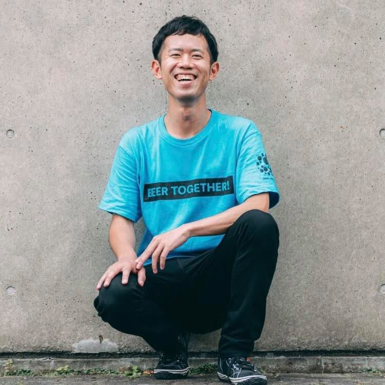
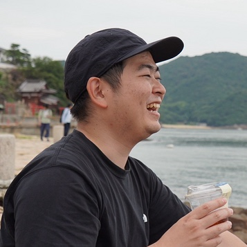

POOLOゼミ 学びの場を、創る。 ／ 第1回 2026.10.13
旅の棚卸しから、
問いを掘る。
全7回のはじまりの回です。
今日の2時間で、自分だけの問いを1つ決めます。
- ビデオ できるだけオンでお願いします
- Zoomの名前 「あだ名＠いまいる場所」に変えてください
- ワークシート リンクをZoomのチャットに貼ります。自分の名前の列を開いておいてください
今日の流れ
20:00–22:00の2時間。
| 20:00 | はじめに | 今日の流れと、メンター・事務局の紹介 | |
| 20:05 | チェックイン | Q1を書いてから、一人ずつ自己紹介 | Q1 |
| 20:25 | 3ヶ月の進め方 | ゴール、全7回、ワークシートとSlackの使い方 | |
| 20:35 | ミニレクチャー | 問いを掘る | |
| 20:50 | ワーク | 心が動いた瞬間を10個書いて、1つ選び、くわしく書く | Q2〜Q4 |
| 21:12 | 小グループ | 2〜3人に分かれて、Q4の話をする | |
| 21:27 | ワーク | 問いの形にして、仮テーマを1行に | Q5・Q6 |
| 21:40 | フィードバック | 全員の問いと仮テーマを聞いて、一言ずつ返す | |
| 21:52 | チェックアウト | 今日の一言と、次回までの課題 | Q7 |
メンター・事務局
この3ヶ月を、3人で支えます。
メンター
新 朱華
コミュニティデザイナー。大阪出身、東京・沖縄・海外を経て香川県に移住。POOLOには2期から関わっています。

メンター
恩田 倫孝みっちー
POOLO学長、コオドリ代表。前身の「旅大学」から、700回ほどイベントや講座を企画してきました。全7回の進行を担当します。

事務局
嵐田 創太あらし
コミュニティマネージャー。日程の案内やSlackなど、運営まわりの窓口です。困ったら、まず気軽に声をかけてください。
第5回の1対1のメンタリングは、メンターの2人が担当します。
チェックイン ／ Q1 ／ 2分
まず、ワークシートに
1行書いてください。
この3ヶ月でつくってみたい場を、
いまの言葉で。
ぼんやりしていて大丈夫です。「まだ何も決まっていない」と書いてもOK。
12月22日の第7回で、全員でこの1行を読み返します。
チェックイン ／ 1人2分
一人ずつ、自己紹介をお願いします。
01あだ名と、
いまいる場所呼ばれたい名前で
02POOLOとの
関わり何期、どのゼミ、など
03Q1に
書いたこと読み上げるだけで大丈夫です
04最近いちばん
心が動いた旅ひとことで
最初は恩田から話します。聞いている人は、Zoomのリアクションで反応してください。
この3ヶ月の進め方
12月22日の第7回は、
「開業式」です。
最終回では、一人ずつ自分の企画書をお披露目して、同期どうしがおたがいの最初の参加者になります。そして、自分の場の初回の開催日を、その場でカレンダーに入れて終わります。
企画キャンバス
3ヶ月で埋めるのは、この1枚。
01なぜ私が旅のどの経験が、この問いの根っこにあるのか
02誰のために来てほしい一人を、具体的に思い浮かべる
03一言でいうと参加者が友人に説明できる、ひとつの文に
04どんな体験を何回で、何をして、終わったときどうなっているか
05いくらで価値と、続けられる値段のつり合い
06どう伝えるかどこで、どんなことばで届けるか
07いつ創るか初回の開催日を、カレンダーに入れる
今日今日は①「なぜ私が」を書きます。回を追うごとに1つずつ埋まり、7つそろうと人に見せられる企画書1枚になります。
全7回
隔週火曜20:00–22:00、すべてZoom。
| 01 | 10月13日（火） | 旅の棚卸しから、問いを掘る | 今日 |
| 02 | 10月27日（火） | たった一人に向けて、問いを「学び」にする | |
| 03 | 11月10日（火） | 学びの場を、設計する（アフロマンスさん） | ゲスト |
| 04 | 11月24日（火） | ミニ開催で、試作する | 山場 |
| 05 | 11/25–12/6 | 1対1で、企画を磨く（30–45分） | 別日程 |
| 06 | 12月8日（火） | 自分の場に、人を集める（ルイス前田さん） | ゲスト |
| 07 | 12月22日（火） | ひらいて、送り出す（開業式） | |
Zoomのリンクは全7回同じです。第4回は、自分の場の1コマをみんなの前で開いてみる回なので、できるだけ参加してください。
毎回の進み方
1回ごとに、事前・当日・事後の
3つを書きます。
事前課題
回の前に、
60〜90分
前の回の事後課題で書いたものが、そのまま材料になります。第2回から始まります。
当日
2時間の
ワークと対話
チェックイン、実践のシェア、ミニレクチャー、メインのワーク、フィードバック、チェックアウトの順で進めます。
事後課題
次の回までに、
90〜120分
ほとんどが「人に話してみる」「試してみる」課題です。やってみた反応を、次の回に持ってきてもらいます。
当日の2時間の組み方は、みなさんが自分の場を開くときにも、そのまま使えるようにしてあります。
ワークシート
書く場所は、
1つのスプレッドシートです。
- 1回で1タブ 今日は「第1回 問いを掘る」のタブを使います
- 自分の名前の列に書く 一番上の「あだ名」に名前が入っています。1人1枠です
- ほかの人の記入も見える 同期が何を考えているかを知っておくと、第7回でおたがいの参加者になるときに役立ちます
- 書ききれなくても進む 空いたままで大丈夫です。時間が来たら次へ進みます
Slack
連絡と相談は、ゼミのSlackで。
- #0_全体へのお知らせ 各回の案内とZoomのリンク、リマインドが届きます
- #1_質問や相談 課題で分からないところ、企画で迷っていることは、ここに気軽に
- #1_講義の遅刻欠席 遅れそうなとき、休むときに一言ください
- #1_〇〇やったよ報告 人に話してみた、場を開いてみた、を書く場所です
事後課題で「話してみた」ら、報告チャンネルに一言書いてもらえると、ほかの人の励みになります。
ミニレクチャー ／ 15分
問いを掘る。
企画キャンバスの①「なぜ私が」にあたる部分です。
自分の場を考えるとき、最初に何から考えるかの話をします。
ミニレクチャー
出発点は、
「つい語ってしまうこと」。
「自分は何を教えられるか」から考え始めると、資格や経歴の話になって、多くの人がそこで手が止まります。このゼミでは、旅の話になるとつい自分が前のめりになってしまうことから始めます。話している本人が夢中な話は、聞いている側も前のめりで聞いてくれるからです。
ミニレクチャー
テーマに、自分の「わからない」を
足すと、問いになります。
テーマ ／ 発酵
問い
旅先の市場で食べた漬物の味を、
なぜいまも覚えているのか
テーマ ／ 巡礼
問い
何日も歩き続けると、
人はなぜ知らない人に親切になるのか
テーマ ／ 地域
問い
人口千人の島に、
どうして若い人が戻ってくるのか
問いがあると、参加者と一緒に考える時間をつくれます。主催する人が、答えを全部知っている必要はありません。
ミニレクチャー
問いの手がかりは、
この3つの中にあります。
01何度も人に
話している話飲み会や自己紹介で、気づけば毎回している旅の話
02心が動いた
瞬間驚いた、悔しかった、引っかかった。いい話でなくて大丈夫です
03「そこ詳しいね」と
言われること旅に限らず、人からよく聞かれること
このあとのQ2は、この3つを思い出しながら書いてください。
例
旅の1つの経験が、
こんな場になります。
鹿児島の「辺境」から、
日本を見る
全4回 ／ 25,000円 ／ 定員8名
地域に通い続けた人の、土地から社会を読む場
北海道、食の裏側
開拓史と生産者から読み解く
全5回 ／ 30,000円 ／ 定員10名
食べ歩きが好きだった人の、産業と歴史をたどる場
40歳の地図
旅の問いで、これからをことばにする
全4回 ／ 30,000円 ／ 定員6名
人生の節目に旅に出た人の、同世代と考える場
どれも、募集ページで紹介したイメージ例です。ジャンルはばらばらで、共通しているのは「旅で見つけた問いが根っこにある」ことだけ。テーマが誰かと近くても、もとになった経験が違えば、まったく別の場になります。
メインワーク ／ 50分
ここから50分、
手を動かします。
ワークシートのQ2から順に進みます。
書いている間、恩田はZoomにいるので、手が止まったら声をかけてください。
Q2 ／ 12分
まず、たくさん書き出します。
旅の中で「つい人に話してしまった」
「心が動いた」瞬間を、10個。
・いい話を書こうとしなくて大丈夫です。「人に言うと引かれるかも」くらいの話にこそ、問いが入っています
・単語でも、途中で切れていてもOK
・10個埋まらなくても、時間が来たら次へ進みます
Q3 ／ 3分
この中から、1つだけ。
「これについてなら、黙っていられない」
そう思えるものを、ひとつ。
迷ったら、いちばん長く話せそうなものを。
1つに絞れないときは、いくつかに共通していることを1行で書いてもOKです。
Q4 ／ 7分
その場面を、
もう少しくわしく書きます。
01いつ
02どこで
03誰といて
04何が起きて
05何を思ったか
最後に、それがいまも心に残っている理由を書いてみてください。うまく言えなければ、「なぜか残っている」でも大丈夫です。このあと、この話を小グループでします。
小グループ ／ 15分
2〜3人に分かれて、
Q4の話を一人ずつ。
- 話す人 1人4分くらい。Q4を見ながら、その場面のことを話してください。まとまっていなくて大丈夫です
- 聞く人 話のあとに1つ質問をして、話した人の枠の下にある「みんなから」に、あだ名と一言を書きます
- 一言の中身 参加者として「もっと聞きたくなったこと」を書いてください
小グループ
質問に迷ったら、
このどれかを。
- そのとき、いちばん強く思ったことは何ですか
- いまも、同じように思っていますか
- その話を、誰にいちばん聞いてほしいですか
- その経験のあと、自分の中で何か変わりましたか
答えにくそうだったら、無理に深掘りしなくて大丈夫です。
Q5 ／ 8分
話してみた場面を、
問いの形にします。
Aなぜ、〜なのか
Bどうしたら、〜できるのか
C〜とは、何か
この形で3つ書いて、いちばん気になる1つの頭に◯をつけてください。「みんなから」に書いてもらった一言も、ヒントにしてください。
Q6 ／ 5分
最後に、仮テーマを1行で。
から学ぶ、
左にあなたの旅の経験、右に来た人が持ち帰るもの。今日は仮で大丈夫です。次回までに人に話してみて、何度でも書き直します。
フィードバック ／ 12分
全員で、一人ずつ
Q5とQ6を読み上げます。
- 読む人 ◯をつけた問いと、仮テーマを読み上げます。1人1分くらい
- 聞く人 読んだ人の「みんなから」に、あだ名と一言を書きます。小グループで書いた人は、2つめの一言を
恩田からも、一人ずつ一言返します。
チェックアウト ／ Q7
いま思っていることを、一言。
Q7に書いてから、一人ずつ声でも話してください。「疲れた」「まだもやもやしている」でも大丈夫です。
次回までの課題 ／ 目安90分
10月27日までに、
仮テーマを3人に話してみる。
- ① 仮テーマを、3人に話してみる。1人15分くらい。POOLOの人でも、職場や家族でも大丈夫です
- ② 反応を、ワークシートのQ8に書く。相手／いちばん食いついたところ／聞き返されたこと
- ③ 反応を見て、仮テーマを書き直す（Q9）
- ④ 来てほしい人の候補を3人挙げる。名前と、その人がいま困っていそうなこと（Q10）
話してみたら、Slackの「#1_〇〇やったよ報告」にも一言書いてください。
次回
第2回は10月27日（火）20:00から。
たった一人に向けて、
問いを「学び」にする。
Q10に書いた3人の中から1人を選んで、その人が参加したあと、どんな顔で帰るかを考えます。Zoomのリンクは今日と同じです。
直したい文字をクリックして、そのまま打ち替えてください。
改行は Shift + Enter。入力はこの端末に自動保存されます。
編集中はスライドが送られません。送るときは編集モードを切ってください。
直し終えたら「変更点をコピー」を押して、その中身をClaudeに貼れば公開版に反映します。